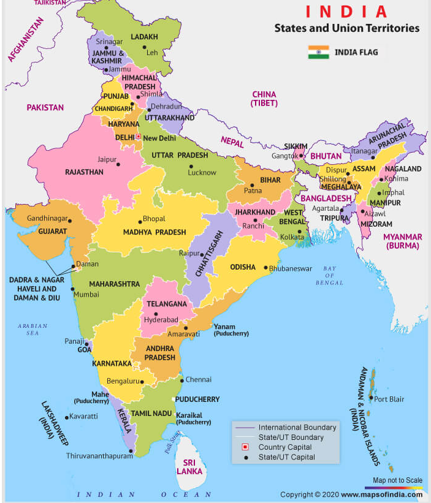

|

|
Andhra Pradesh
District Names
- Anantapur
- Chittoor
- East Godavari
- Guntur
- Krishna
- Kurnool
- Prakasam
- Srikakulam
- Visakhapatnam
- West Godavari
- Y.S.R.
Arunachal Pradesh
District Names
- Tawang
- West Kameng
- East Kameng
- Kurung Kumey
- Papum Pare
- Upper Subansiri
- Lower Subansiri
- West Siang
- East Siang
- Siang
- Lower Dibang Valley
- Dibang Valley
- Anjaw
- Changlang
- Longding
Assam
District Names
- Barpeta
- Bongaigaon
- Cachar
- Darrang
- Dhubri
- Dibrugarh
- Goalpara
- Golaghat
- Hailakandi
- Jorhat
- Kamrup
- Kamrup Metropolitan
- Karbi Anglong
- Kokrajhar
- Lakhimpur
- Majuli
- Morigaon
- Nagaon
- Nalbari
- Sivasagar
- Sonitpur
- Tinsukia
- Karimganj
Bihar
District Names
- Araria
- Arwal
- Aurangabad
- Bhagalpur
- Bhojpur
- Buxar
- Darbhanga
- East Champaran
- Gaya
- Gopalganj
- Jamui
- Jehanabad
- Kaimur
- Kishanganj
- Lakhisarai
- Madhepura
- Magadh
- Maner
- Madhubani
- Munger
- Nalanda
- Muzaffarpur
- Patna
- Rohtas
- Saharsa
- Samastipur
- Saran
- Sheohar
- Sitamarhi
- Supaul
- Vaishali
- West Champaran
|